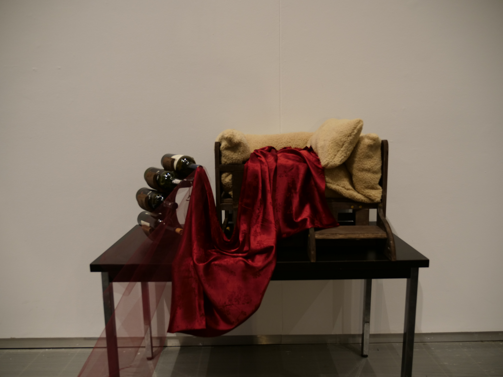
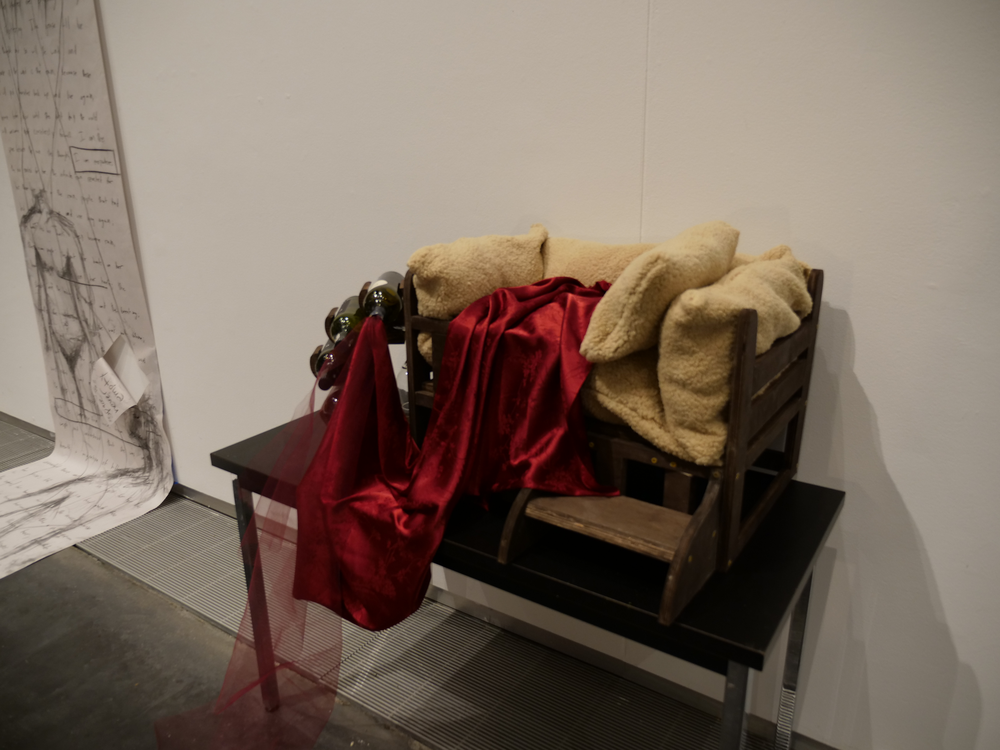
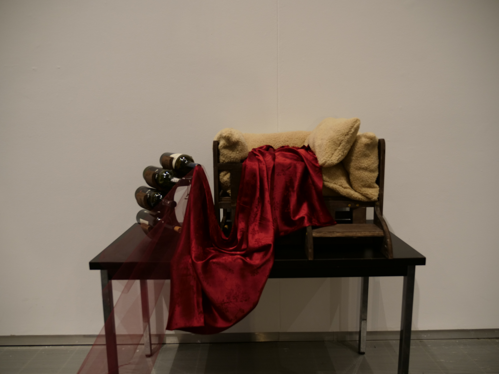
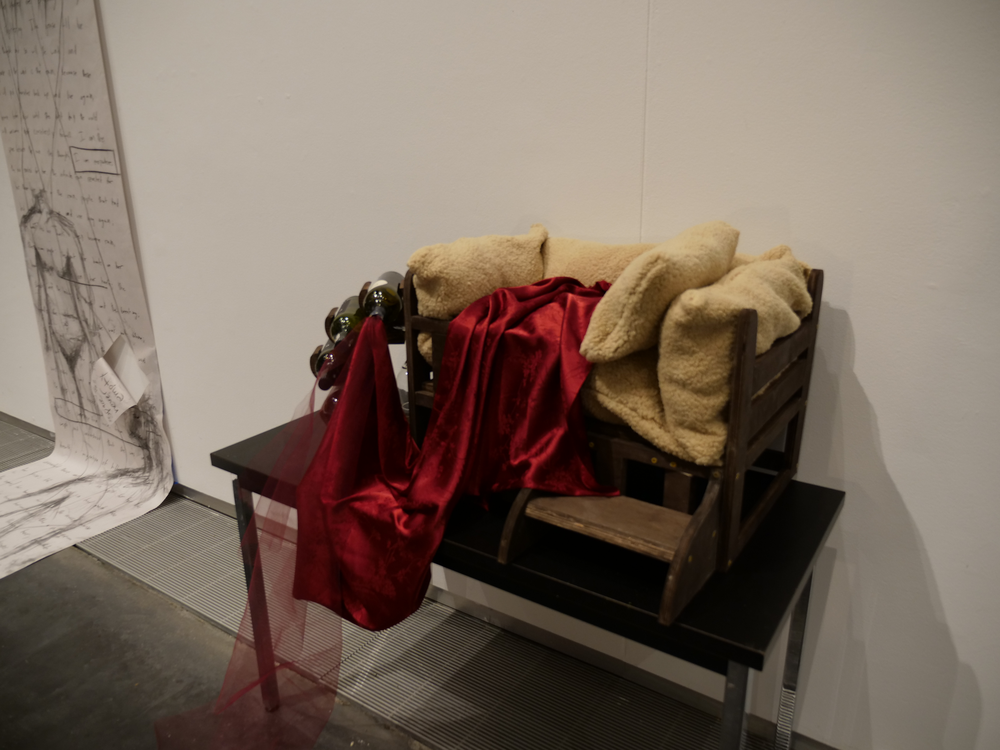

JUNIOR FORMAL: FRIENDS VISITING & SEWING NEW DRESS
February 2025
Recently, I found one of the most beautiful fabric ever and have been wanting to make a dress out of it. Luckily, junior class formal was coming up so I decided to use this formal as an excuse to make a dress!
I first checked how much of the fabric I bought. Because most fabrics are 54” in width, I couldn’t make a full-length dress. I decided to make a midi off-the-shoulder dress. I wanted the torso part tight and the skirt flowy with tulle fabric.
I took all my measurements and started getting to work. This is actually my first time making a tight fitted top and a circle skirt, but it was so fun! It took me around a total of ~20 hours to make this dress, from design to finish. I did end up not having enough fabric for the off-the-shoulder part but I make something work.
Unfortunately, I was not able to get a full-body picture of my dress from formal night. My hometown friends visited me for the weekend and I was just too excited to see them that I forgot about taking pictures of my dress.
This was the first time all of my hometown friends came to Yale at the same time. It was such a wonderful time and I truly missed the four of us hanging out. They are friends I grew up with and the comfort they bring to me is unmatched! I love them so much. I am grateful for the quality time we were able to spend together and the fun music video we made. I am already looking forward to the next time we can reunite!


LEE SIBLING TRIP TO BOSTON
January 17-20, 2025
This weekend, my brother Joel visited me at Yale! This was his second time visiting with the first being 1.5 years ago. I can’t believe it has already been that long! It feels like he visited me just a couple months ago. Time does fly by fast, but looking back, a lot of things has changed for both of us. Not only did we grow as individuals, but we also grew a lot closer. I am eternally grateful that we became closer to the point where he visits me!
At Yale, Joel met some new and old friends, and we played the Switch together. I didn’t really give him a tour since this was his third time at Yale. We just ate. A lot. One new place I showed him was my new on-campus job! He thought it was alright- I’m a little disappointed by his reaction but fair enough (I guess).
Since there is nothing much to do around Yale, I took him to Boston. Last time he came, we went to New York City. This trip was more special because it was his first time at Boston whereas he has already been to NYC a couple times before. While the sightseeing was great, I think the food was the best part. My brother loves dumplings/dim sum/baos so of course I had to take him to a good place in Chinatown. We also visited Newbury Street where he got to try the popular Levain Cookies. We ate lobster rolls and seafood as our last meal right along a nice view of Seaport. While these foods may be normal for the northeasterners, it is new and special to us southerners. Even though I am not a huge foodie myself, I remember when I first tried these viral foods after coming to college and loving the variety of Asian foods and other delicious treats. I think my brother enjoyed it and I am so happy I got to share the food and experience with him.
Our time together ended on a heartwarming note with a beautiful gift- snow! My brother has never seen real snow in his life! I am so thankful that I had the opportunity to see him experience snow for the first time. It snowed so much that the whole city got covered within minutes! Joel seemed so happy and watching him enjoy the snowfall warmed my heart incredibly. He threw his first snowball, tasted his first snowflake, and played with the neighbors too.
Coming back to campus alone, I felt a bit lonely and empty with Joel gone. Even though he was here for only a weekend, his presence alone brought me comfort and joy. It made me think a lot about our time growing up where we would fight a lot. If you told us or anyone that knew us that we would be this close today, no one would have believed it! I am still in shock myself at how fast we were able to mend our relationship. Even though we had a late start to a good sibling relationship, I believe that our sibling bond is the strongest! There is no one who understands and relates to me better than my own sibling, and I feel incredibly blessed and lucky to have a kind, pure brother like Joel. I am so thankful Joel took the time to visit me despite his busy schedule and I hope he had as good of a time as I did. Until our next sibling trip…


THE BIRTH OF MY WEBSITE
January 14, 2025
Just like every other student, I had a LinkedIn. However, I was never satisfied with what LinkedIn allowed each user to put on their profile.
My work and volunteer experience or education rarely defined and fully showed who I am. More than that, it is my hobbies that ultimately have
contributed the most into shaping the kind of person I am. I wanted to not only properly show my true self, but also share the works I have
invested so much love, effort, and time into over the years.
Thus, I began planning how to build my own website. I took Harvard's famous CS50 course in my freshman year of college where I was first introduced
to the world of coding. Although 2 years have passed since, I decided to refresh my memory and expand my knowledge of coding by attempting to code my
own website. I started relearning during Summer 2024 while attending Yonsei University's KLI program. Relearning the basic python and html
needed to build a simple website was relatively easy. However, finding resources and teaching myself how to elevate my
website in the way I wanted was not easy. After the start of Fall semester back at Yale, I barely had time to work on my website, but made an effort
to consistently improve something in my free time.
And before I knew it, I'm done! My website is published!
ENTERING THE NEW YEAR- REFLECTING ON 2024
January 1, 2025
2024 was truly a year where I have received many blessings and have so much to be thankful for.
The beginning of 2024 is when I changed my major (for the last time) to something I truly enjoy. I cannot
emphasize how grateful I am to have made this choice. The classes, professors, projects, and people have all
been so wonderful. I also made lots of changes in my personal life that have allowed me to grow and enjoy
life more. 2024 started off in an exciting, yet scary way with the many changes, but looking back, it has been
so worth it.
If I had to name some of the best moments in the first third of 2024, I would have to say the time spent with my wonderful
friend Reshna. We visited each other quite often. She was also my first actress for my documentary film. Filming was so fun and
having one of my best friends volunteer to act in my film also made me more comfortable. I also enjoyed spring
fling very much with her. She was there for most of my cherished memories of sophomore year and I am so grateful. Speaking of
my documentary, I enjoyed filming it so much and am so grateful to everyone who participated. I couldn't have asked for a better
cast!
I saw the solar eclipse, did an easter egg hunt for the first time since elementary school, had my childhood bestfriend
visit me at school, attended fun workshops, learned how to use and edit green screen on photoshop, and so much more!
I also chopped off my hair to a bob for the first time in almost 10 years! I never knew how light my head could feel.
The second third of 2024 was spent in South Korea. I went to study abroad at Yonsei University for 10 weeks. I usually visit Korea
for around 1-2 months, but this time I stayed for 3 months! It was my first time staying this long with my grandparents, and it was
good and bad. I was so grateful I could spend so much time with them, especially because I barely see them. Especially with their
worsening health with age, I was very thankful I could take care of them and take them out to different places. It was bad because we
both got so attached that the farewell was really hard for all of us. I have never seen my grandpa cry until we said our goodbyes at
the airport. I wish I can go back more often- I miss them so much.
As for study abroad, it was good for the most part! I liked my teachers, but I was even more grateful for my classmates. It was the first time in
my life where I was one of the youngest ones in class. They were so nice to me and took good care of me, I am truly eternally thankful.
I wish I could have taken a higher level course, but I'm thankful it didn't work out because I couldn't have asked for a better class!
An unexpected surprise in Korea was getting close with my cousins! I always thought my cousins didn't like me that much. After all,
I was the only girl so of course they preferred to hang out with my brother. I don't know if they hung out with me because I was
the only option, but I am still thankful either way. My older cousin had more free time this summer since he was going to the military
so of course I took this opportunity to force him to go to the Hello Kitty 50th Anniversary exhibition with me as my photographer. But
my uncle and younger cousin ended up joining us, making it so much better! I'm sure they didn't want to go (I didn't tell them where we were going)
but nonetheless, I'm grateful for the time we spent together.
The last third of my 2024 was spent back at school. I still cannot believe I am a junior now. I felt like I instantly had more responsibilities
just because I became a junior. Like the previous semester, I am so thankful for all the classes I took and my wonderful professors. Class was
truly enjoyable and I definitely learned so much. I had to film a lot more this semester and this gave me the opportunity to meet and work with a lot
of new people! I was able to film my final project in my hometown, and having family friends as my actors was so funny and just a wonderful time.
The story of my final film was about my brother and I- a story that is very meaningful to me- so it was great to have important people in my life act
in my film. I also tried out woodworking and dance this semester. Learning these new activities made the semester all the more amazing. I do think Fall
2024 is my best semester yet!
I'm also so thankful I got to spend the holidays with family. My mom and I took Simba on a quick trip to see Christmas lights, my family ate good food
together, and we got thoughtful gifts for each other. I love Christmas and it was so wonderful to spend it with the people I love the most.
And before I knew it, it was December 31, 2024. The year truly flew by. To end this wonderful year, I spent it with my best friends. Gathering together
after not seeing each other for so long was wonderful. I cannot express how thankful I am for this friendship and spending time with them was just the perfect
way to end my 2024.
Overall, 2024 was one of the best years of my life. 2024 has been a critical, transformative year for me, and I cannot wait to see what 2025 brings!
Happy New Year!
LEARNING WOODWORK
Fall 2024
During Fall 2024 semester, I had the privilege of taking a class on woodworking.
I can't express how thankful I am to have taken this class! While the machines looked
quite intimidating and scary, I was very excited to try it out. I first made a desconstructable
picture frame and small box. This was for practice so no painting or wood finishes were used
in this project. For my final project, I decided to make a wine rack to celebrate my 21st
birthday. I created my own design and went to work right away. I used plywood sheets, so the wood
wasn't difficult to work with, yet because of the precise details, it took a lot of time.
After discussing with my professor, I was told that I lacked deep meaning and intention behind
my work. As this was my first art class, I struggled in connecting sophisticated meanings
behind artworks. I decided to think what wine meant to me. But all I could think of was how much
I love wine. But as I thought deeper, I realized that I usually drink wine before I go to sleep and
thought about how that could lead to dependence on alcohol in the long term. In hopes to express my
concern for my own health and the overall issue of alocohol dependence, I decided to pursue this
theme for my final project.
In addition to the wine rack, I decided to create a miniature version of a children's bed.
I designed it so the design of the bed looked child-like. Another condition of the final project
was that we had to incorporate another material other than wood. I decided to use fabric since
I enjoy sewing and am knowledgeable in that field. I chose soft, comforting shade of brown for the
bed and used a striking red fabric to intertwine the two wood pieces to showcase the dangers of alcoholic
dependence for sleep despite its temporary satisfactions.
*Both wood pieces were painted in Dark Oak and finished with Tung Oil.


 



MY FIRST DOCUMENTARY
April-May 2024
This semester, I had the privilege of taking a documentary filmmaking course for the first time. Because I was a part of my school’s daily news team in high school, I was familiar with creating factual content, but making a longer documentary film that explored the topic in-depth was new to me.
I wanted to choose a topic that I am passionate about and that is relevant to my current environment. As I contemplated on the topic, I decided to pursue a challenge that I personally have struggled with coming to an ivy league from a suburban, less competitive town- the ivy league to finance pipeline.
Growing up, I was not familiar with the finance industry at all. In fact, I have never heard the terms “investment banking” or “consulting” until I came to Yale. It seemed like these jobs were the craze at Ivy Leagues and seen as the most prestigious jobs you can get post-grad. Everyone around me was talking about it or switching over their career goals to finance, and I too got influenced and started chasing after this industry.
But then, I took a philosophy course called “Life” by Shelly Kagan. In one of the units, we covered career. The discussions in the course led me to reconsider why I am pursuing finance and realized that I chose finance because everyone around me was doing it, not because I was genuinely interested in it. I wanted to be part of the prestige and fit in. I remember being shocked by many things coming here and how things were so different compared to my environment before college. It was an adjustment for me and all I wanted was to belong to my new community, pushing me towards the finance industry.
While thinking about this, I wondered why the finance industry is so popular. Yes, the salary is high, but it is also a very demanding job. Is the money the only factor that contributed to its popularity? Especially with Yale’s (and other ivy leagues’) diverse and renowned liberal arts education, why are students choosing to pursue finance? It isn’t even a major at Yale!
Thus, I decided to explore and expand on this phenomenon by creating a documentary. I interviewed six Yale students of different grades, majors, and backgrounds, as well as Shelly Kagan who inspired all this in the first place. I made sure to ask insightful questions to induce non-biased, honest answers, as well as some advice and observations. I am so thankful to my peers and Shelly who took the time to be interviewed and answer honestly. I also visited New York City, specifically Wall St., for b-roll where I had one of my best friends act. I also had other peers act for extra b-roll and narration.
The whole filming process took days, but it was so worth it. Filming this documentary was new and exciting for me, but also quite the challenge. Specifically, the editing process was the most challenging. As I was unable to predict what the interviewees were going to say, I did not have a specific script to follow when editing and had to watch the clips multiple times to create an effective story. With many sleepless nights, I was finally able to produce a documentary I was proud of!